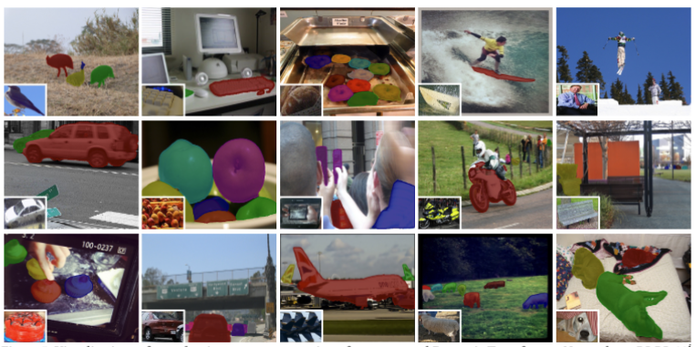

Jie Liu (刘杰) 刘杰 (Jie Liu)
Postdoc Researcher 博士后研究员
Eindhoven University of Technology (TU/e) 埃因霍温理工大学 (TU/e)
AMOR/e Lab AMOR/e 实验室
j.liu9@tue.nl
About Me 关于我
I am a Postdoc Researcher at TU/e AMOR/e Lab, working with Prof. Joaquin Vanschoren on LLMs and MLLMs. Previously I was an ELLIS Ph.D. candidate at VISLAB, University of Amsterdam (UvA), supervised by Prof. Efstratios Gavves and Prof. Jan-Jakob Sonke. I did a fantastic internship at Meshcapade, advised by Dr. Yan Zhang, Dr. Yu Sun, and Prof. Michael Black. I also worked closely with Prof. Pan Zhou. 我目前是 TU/e AMOR/e Lab 的博士后研究员，与 Joaquin Vanschoren 教授合作研究 LLMs 与 MLLMs。 此前我在阿姆斯特丹大学（UvA）VISLAB 担任 ELLIS 博士生， 导师为 Efstratios Gavves 教授 和 Jan-Jakob Sonke 教授。 我曾在 Meshcapade 实习，由 Yan Zhang 博士、Yu Sun 博士 和 Michael Black 教授 指导。 此外，我与 Pan Zhou 教授有紧密合作。
I serve as a regular reviewer for CVPR, ICCV, ECCV, NeurIPS, ICLR, ICML, T-PAMI and IJCV. 我长期担任 CVPR、ICCV、ECCV、NeurIPS、ICLR、ICML、T-PAMI 和 IJCV 的审稿人。
Research Interests 研究兴趣
My research aims to develop human-centered AI that augment human capabilities in perception, reasoning, and interaction with the world. To achieve this, I am focusing on the following topics: 我的研究旨在发展以人为中心的 AI，增强人类在感知、推理与交互方面的能力。为此我重点关注以下方向：
• Generalizable Perception: interactive segmentation, few-shot segmentation, 3D scene understanding • 可泛化感知：交互式分割、小样本分割、3D 场景理解
• Foundation Models: LLMs and MLLMs reasoning, vision-language models, multi-modal learning • 基础模型：LLMs 与 MLLMs 推理、视觉-语言模型、多模态学习
• Embodied Agents: world model, human-scene interaction, multi-agent cooperation • 具身智能体：世界模型、人-场景交互、多智能体协作
Hobbies 兴趣爱好
I'm a sports enthusiast with a passion for snowboarding and badminton. I also hold a 2nd-degree black belt in Taekwondo. Whether on the slopes, the court, or in training, I love pushing my limits and shaping my skills. 我热爱运动，尤其喜欢滑雪板和羽毛球，并拥有跆拳道二段黑带。 无论在雪道、球场还是训练中，我都享受挑战自我、打磨技能。
News 新闻
- [Nov 2025] I started my postdoc at TU/e, working with Prof. Joaquin Vanschoren on LLMs and MLLMs. [2025年11月] 我开始在 TU/e 从事博士后研究，与 Joaquin Vanschoren 教授合作研究 LLMs 与 MLLMs。
- [June 2025] One paper on vision-language models was accepted in ICCV 2025, see you in Hawaii! [2025年6月] 一篇关于视觉-语言模型的论文被 ICCV 2025 接收，夏威夷见！
- [June 2025] I started my internship at Meshcapade and work with Dr. Yan Zhang on motion generation. [2025年6月] 我开始在 Meshcapade 实习，与 Yan Zhang 博士合作研究动作生成。
- [May 2025] Our work NPISeg3D on Interactive 3D Segmentation was accepted in ICML2025! See you in Vancouver! [2025年5月] 我们关于交互式 3D 分割的工作 NPISeg3D 被 ICML 2025 接收！温哥华见！
- [Jan 2025] CaPo, our first work on Embodied Agents, was accepted in ICLR2025, see you in Singapore. [2025年1月] 我们在具身智能体方向的首个工作 CaPo 被 ICLR 2025 接收，新加坡见。
- [Sept 2024] I am visiting Prof. Pan Zhou in Singapore. [2024年9月] 我在新加坡访问 Pan Zhou 教授。
- [July 2024] We present CPlot for Interactive Segmentation in ECCV2024, see you in Milano. [2024年7月] 我们在 ECCV 2024 展示交互式分割工作 CPlot，米兰见。
- [June 2024] One paper with Wenzhe Yin on Domain Adaptation was accepted in UAI 2024, see you in Barcelona. [2024年6月] 我与 Wenzhe Yin 合作的域自适应论文被 UAI 2024 接收，巴塞罗那见。
- [Sept 2023] We present prototype adaption for Few-shot point cloud segmentation in 3DV2024, see you in Davos. [2023年9月] 我们在 3DV 2024 展示小样本点云分割的原型自适应方法，达沃斯见。
- [Sept 2022] Our work on Few-shot Segmentation with Graph Convolution Network was accepted to BMVC2022. [2022年9月] 我们关于图卷积的小样本分割工作被 BMVC 2022 接收。
- [June 2022] One paper with Haochen Wang on Few-shot Segmentation was accepted to ACM MM 2022. [2022年6月] 我与 Haochen Wang 合作的小样本分割论文被 ACM MM 2022 接收。
- [March 2022] Our work on Few-shot Segmentation with Prototype Convolution was accepted to CVPR 2022. [2022年3月] 我们关于原型卷积的小样本分割工作被 CVPR 2022 接收。
- [Sept 2021] I joined VISLAB as a PhD candidate. [2021年9月] 我加入 VISLAB 成为博士生。
Recent Projects 近期项目
-
Open-Vocabulary Functional 3D Human-Scene Interaction Generation 开放词汇的功能性三维人-场景交互生成
Jie Liu, Yu Sun, Alpár Cseke, Yao Feng, Nicolas Hron, Michael Black, Yan Zhang Jie Liu, Yu Sun, Alpár Cseke, Yao Feng, Nicolas Hron, Michael Black, Yan Zhang
arXiv, 2026 — work done as an intern at Meshcapade arXiv，2026 — 在 Meshcapade 实习期间完成
FunHSI is a training-free framework that generates physically plausible and functionally correct 3D human-scene interactions from open-vocabulary prompts and posed RGB-D images. FunHSI 是一个无需训练的框架，可从开放词汇提示与有位姿的 RGB-D 图像生成物理可行且功能正确的 3D 人-场景交互。
[Project项目] [Paper论文] [Video视频] [Code代码] -
 Towards Uniformity and Alignment for Multimodal Representation Learning 面向多模态表征学习的统一性与对齐
Towards Uniformity and Alignment for Multimodal Representation Learning 面向多模态表征学习的统一性与对齐
Wenzhe Yin, Pan Zhou, Zehao Xiao, Jie Liu, Shujian Yu, Jan-Jakob Sonke, Efstratios Gavves Wenzhe Yin, Pan Zhou, Zehao Xiao, Jie Liu, Shujian Yu, Jan-Jakob Sonke, Efstratios Gavves
arXiv, 2026 arXiv，2026
UniAlign provides a conflict-free multimodal representation learning recipe by decoupling alignment from uniformity and utilizing an anchor-based strategy to eliminate competing alignment directions. UniAlign 通过将对齐与统一性解耦，并采用基于锚点的策略消除竞争性对齐方向，提供一种无冲突的多模态表征学习方法。
[Paper论文] -
 Probabilistic Prototype Calibration of Vision-language Models for Generalized Few-shot Semantic Segmentation 面向广义小样本语义分割的视觉-语言模型概率原型校准
Probabilistic Prototype Calibration of Vision-language Models for Generalized Few-shot Semantic Segmentation 面向广义小样本语义分割的视觉-语言模型概率原型校准
Jie Liu, Jiayi Shen, Pan Zhou, Jan-Jakob Sonke, Efstratios Gavves Jie Liu, Jiayi Shen, Pan Zhou, Jan-Jakob Sonke, Efstratios Gavves
International Conference on Computer Vision (ICCV), 2025 国际计算机视觉大会（ICCV），2025
A probabilistic prototype calibration method of vision-language models for generalized few-shot segmentation to improve model generalization without forgetting. 一种概率原型校准方法，用于广义小样本分割，提升模型泛化能力并减缓遗忘。
[Paper论文] [Code代码] -
 NPISeg3D: Probabilistic Interactive 3D Segmentation with Hierarchical Neural Processes NPISeg3D：层级神经过程的概率交互式 3D 分割
NPISeg3D: Probabilistic Interactive 3D Segmentation with Hierarchical Neural Processes NPISeg3D：层级神经过程的概率交互式 3D 分割
Jie Liu, Pan Zhou, Zehao Xiao, Jiayi Shen, Wenzhe Yin, Jan-Jakob Sonke, Efstratios Gavves Jie Liu, Pan Zhou, Zehao Xiao, Jiayi Shen, Wenzhe Yin, Jan-Jakob Sonke, Efstratios Gavves
International Conference on Machine Learning (ICML), 2025 国际机器学习大会（ICML），2025
A probabilistic method for interactive 3D segmentation to facilitate uncertainty estimation and few-shot generalization. 一种用于交互式 3D 分割的概率方法，支持不确定性估计与小样本泛化。
[Project项目] [Paper论文] [Code代码] -
CaPo: Cooperative Plan Optimization for Efficient Embodied Multi-agent Cooperation CaPo：高效具身多智能体协作的协同计划优化
Jie Liu, Pan Zhou, Yingjun Du, Ah-Hwee Tan, Cees GM Snoek, Jan-Jakob Sonke, Efstratios Gavves Jie Liu, Pan Zhou, Yingjun Du, Ah-Hwee Tan, Cees GM Snoek, Jan-Jakob Sonke, Efstratios Gavves
International Conference on Learning Representations (ICLR), 2025 国际学习表征会议（ICLR），2025
An efficient plan optimization method with LLMs for embodied multi-agent cooperation. 一种结合 LLMs 的高效计划优化方法，用于具身多智能体协作。
[Paper论文] [Code代码] -
CPlot: Click Prompt Learning with Optimal Transport for Interactive Segmentation CPlot：面向交互式分割的最优传输点击提示学习
Jie Liu, Haochen Wang, Wenzhe Yin, Jan-Jakob Sonke, Efstratios Gavves Jie Liu, Haochen Wang, Wenzhe Yin, Jan-Jakob Sonke, Efstratios Gavves
European Conference on Computer Vision (ECCV), 2024 欧洲计算机视觉会议（ECCV），2024
A click prompt learning method with optimal transport for interactive segmentation to improve interaction efficiency. 一种结合最优传输的点击提示学习方法，提高交互式分割效率。
[Project项目] [Paper论文] [Code代码] -
Dynamic Prototype Adaptation with Distillation for Few-shot Point Cloud Segmentation 动态原型蒸馏的少样本点云分割
Jie Liu, Wenzhe Yin, Haochen Wang, Yunlu Chen, Jan-Jakob Sonke, Efstratios Gavves Jie Liu, Wenzhe Yin, Haochen Wang, Yunlu Chen, Jan-Jakob Sonke, Efstratios Gavves
International Conference on 3D Vision (3DV), 2024 国际 3D 视觉会议（3DV），2024
A prototype adaptation method for few-shot point cloud segmentation. 一种面向少样本点云分割的原型自适应方法。
[Paper论文] [Code代码] -
Few-shot Semantic Segmentation with Support-Induced Graph Convolutional Network 支持诱导图卷积的少样本语义分割
Jie Liu, Yanqi Bao, Haochen Wang, Wenzhe Yin, Jan-Jakob Sonke, Efstratios Gavves Jie Liu, Yanqi Bao, Haochen Wang, Wenzhe Yin, Jan-Jakob Sonke, Efstratios Gavves
British Machine Vision Conference (BMVC), 2022 英国机器视觉会议（BMVC），2022
A graph convolutional network for few-shot semantic segmentation with support-induced structure. 一种基于支持诱导结构的图卷积网络用于少样本语义分割。
[Paper论文] [Code代码] -
Dynamic Prototype Convolution Network for Few-shot Semantic Segmentation 动态原型卷积网络用于少样本语义分割
Jie Liu, Yanqi Bao, Guosen Xie, Huan Xiong, Jan-Jakob Sonke, E Gavves Jie Liu, Yanqi Bao, Guosen Xie, Huan Xiong, Jan-Jakob Sonke, E Gavves
Conference on Computer Vision and Pattern Recognition (CVPR), 2022 计算机视觉与模式识别会议（CVPR），2022
A dynamic prototype convolution network for few-shot semantic segmentation to improve model generalization. 一种动态原型卷积网络，用于提升少样本语义分割的泛化能力。
[Paper论文] [Code代码] -
Domain Adaptation with Cauchy-Schwarz Divergence 基于柯西-施瓦茨散度的领域自适应
Wenzhe Yin, Shujian Yu, Yicong Lin, Jie Liu, Jan-Jakob Sonke, Efstratios Gavves Wenzhe Yin, Shujian Yu, Yicong Lin, Jie Liu, Jan-Jakob Sonke, Efstratios Gavves
Conference on Uncertainty in Artificial Intelligence (UAI), 2024 不确定性人工智能会议（UAI），2024
[Paper论文] [Code代码] -
PiClick: Picking the Desired Mask in Click-based Interactive Segmentation PiClick：点击交互分割中的目标掩码选择
Cilin Yan, Haochen Wang, Jie Liu, Xiaolong Jiang, Yao Hu, Xu Tang, Guoliang Kang, Efstratios Gavves Cilin Yan, Haochen Wang, Jie Liu, Xiaolong Jiang, Yao Hu, Xu Tang, Guoliang Kang, Efstratios Gavves
IEEE Transactions on Multimedia (TMM), 2023 IEEE 多媒体汇刊（TMM），2023
[Paper论文] [Code代码] -
Dynamic Transformer for Few-shot Instance Segmentation 动态 Transformer 用于少样本实例分割
Haochen Wang, Jie Liu, Yongtuo Liu, Subhransu Maji, Jan-Jakob Sonke, Efstratios Gavves Haochen Wang, Jie Liu, Yongtuo Liu, Subhransu Maji, Jan-Jakob Sonke, Efstratios Gavves
Proceedings of the 30th ACM International Conference on Multimedia (ACM MM), 2022 第 30 届 ACM 国际多媒体会议（ACM MM），2022
[Paper论文] [Code代码]